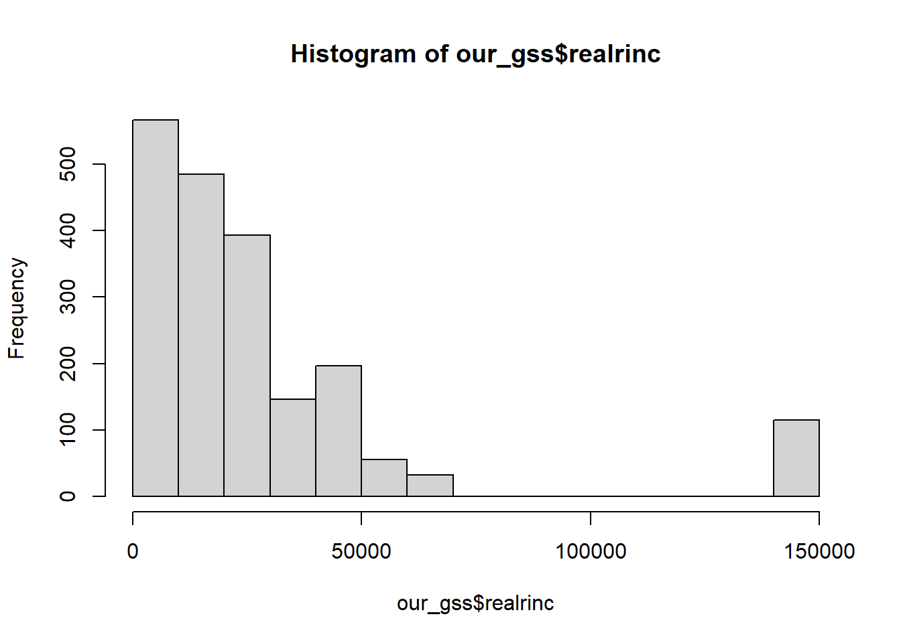
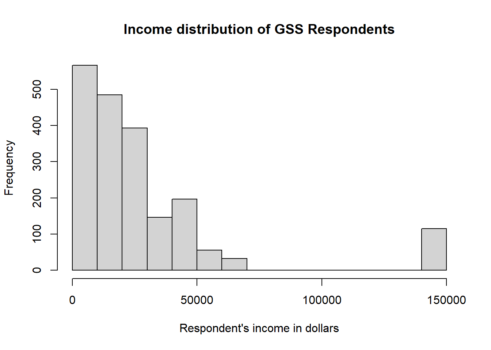
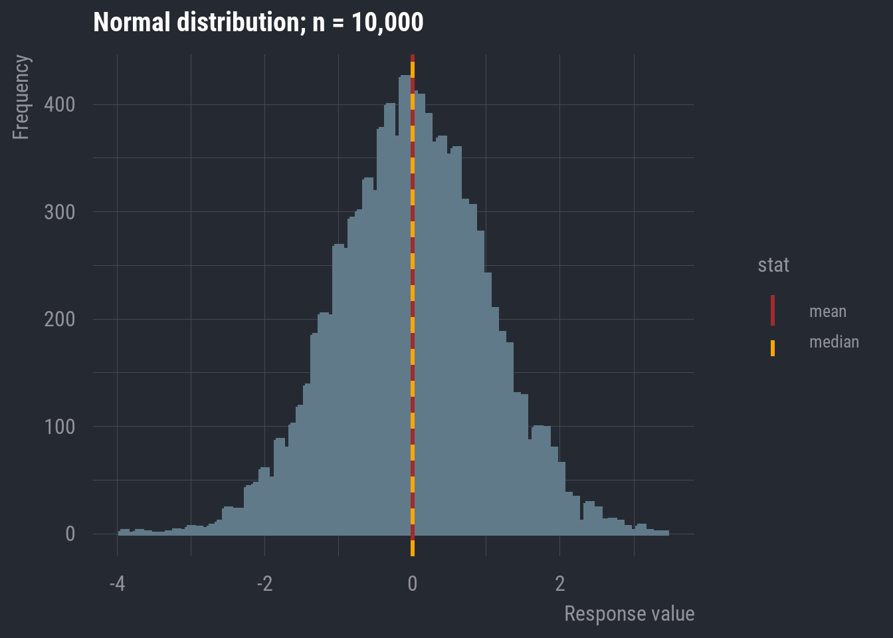
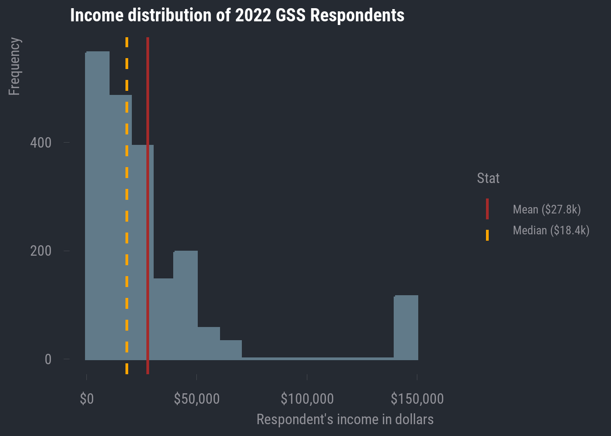
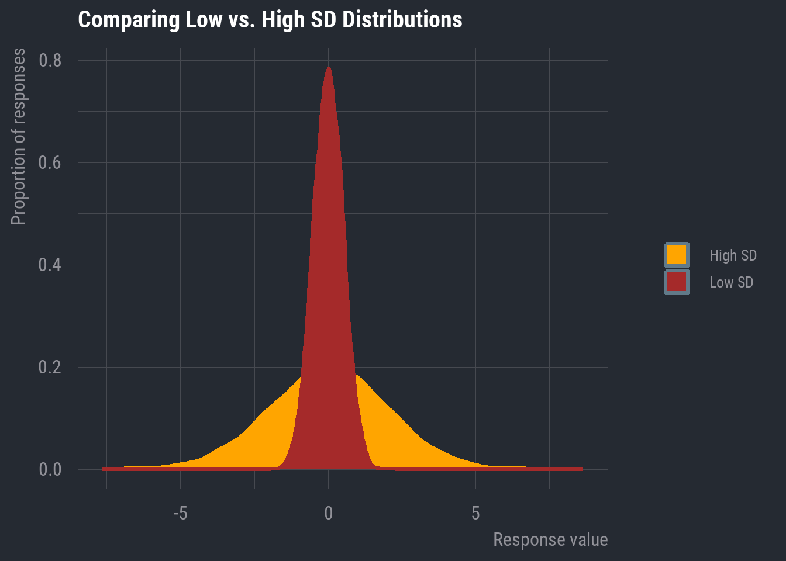

library(tidyverse)
load("our_gss.rda")5 Univariate: Numeric
While we also want to report on the frequency distribution and central tendency of numeric variables, there are some differences in the way we go about that relative to the techniques we just learned about for categorical variables.
Additionally, we will need to report on some measures of dispersion that can only be reported for numeric data, such as the standard deviation.
This section will walk us through the process of calculating and reporting necessary elements of a univariate analysis of numeric data.
5.1 Frequency Distributions
As we saw when we were recoding age earlier in the unit, a frequency table is not really appropriate for numeric data. When there are upwards of 71 different response values—as we have with age—a table would be both spatially unwieldy and difficult to interpret.
So, let’s start with a style of plotting data that is essentially the barplot of numeric data.
First, let’s go ahead and set up our environment by loading in our data and tidyverse per usual.
5.1.1 Histograms
A histogram is the result of taking a numeric variable, slicing it up into equal, ordinal intervals, and then plotting the frequency of each interval.
There are plenty of other ways for plotting numeric data—some of which we will see later when we focus on visualization—but for now, this is a simple and effective way to get a sense of the distribution of a numeric variable. This is especially important when we need to decide on an appropriate measure of central tendency.
We can create these easily using the hist() function, which is in the same family of base R plotting functions as barplot(), so much of what we learned for that function will also apply with hist(). This function will automatically apply a commonly used method called Sturges’s rule to divide our numeric variable into equal bins, so we do not have to specify anything in that regard.
All we need to do is give the hist() function our numeric variable. Let’s work with the realrinc variable for this example.
hist(our_gss$realrinc)
Much like we did with barplot(), we can clean this up a little by adding a title and a better label for the x axis
hist(
our_gss$realrinc,
main = "Income distribution of GSS Respondents",
xlab = "Respondent's income in dollars",
)
Now we have our histogram!
However, this visualization does suggest that we need to do some thinking about the appropriate measure of central tendency for realrinc.
5.2 Central Tendency
For numeric data, any of the 3 common measures of central tendency can be reported. However, the preferred measure for a given variable depends on its distribution.
The mean is the gold standard for numeric data, because it takes into account every single data point in its calculation, and is thus the most comprehensive index of central tendency.
However, the mean can be misleading in some cases. The distribution should be (basically) normal in order for you to report the mean, and you will want to report the median in most other cases.
I will first cover the choice of mean or median by revisiting some basics of distributions, and then I will address the rare circumstance where the mode is appropriate.
5.2.1 Mean or Median?
In most cases, we will be making a decision between the mean and the median. When the distribution is normal, you should report the mean—otherwise, report the median. We’ll see one exception to this later, but that’s generally our task.
We saw some typical distributions in our last section on uivariate analysis of categorical data. We’ll return to some discussion of those basic distribution types but add a little more context for numeric data that will help us see the impact of making the wrong decision.
I’m going to display a normal distribution, but this time, I’ll draw a vertical line indicating the location of the mean and median.

In this case, they appear to be overlapping. In fact, in a completely normal distribution, all three measures of central tendency will be equal. Though, remember that real-world data will rarely exhibit perfect normality. As long as it’s approximately normal, we can default to the mean because it accounts for every data point in the variable’s distribution.
Now, let’s look back at realrinc.

In the case of realrinc, we definitely do not have much normality going on. For one, there are some apparent outlier cases. Much of our data seems to be concentrated within about $0 - $75,000, but then we have a bunch of values at roughly double the maximum of that narrower range. And even within the range where most of our responses are clustered, we have some clear right-skew.
In general, it’s ideal that the mean includes every data point, but this also makes it susceptible to non-normal distributions. As we can see, the mean will be pulled in the direction of the skew.
In this case, it becomes an advantage that the median does not take every data point into account. This makes it more resistant to skew, so, in any case where your numeric variable contains clear outliers and/or exhibits notable skew in either direction, you should report the median rather than the mean.
5.2.2 The Mode
By and large, the mode is more appropriate for categorical data. But there are some circumstances where it makes sense to report the mode for numeric data.
Let’s take a look at the original age variable to see an example.
hist(
our_gss$age,
main = "Age distribution of 2022 GSS Respondents",
xlab = "Respondent age in years"
)This isn’t quite a normal distribution, but it’s not exactly skewed in either direction either. And there are no apparent outliers.
What we have here is a bimodal distribution.
This is what happens when we have multiple peaks in a distribution—two, in this case. We have seen several different distributions so far, but they all had only one peak in the distribution. They were differentiated on the basis of that single peak’s location in the distribution. In the case of a multimodal distribution, we want to report on any notable peak.
This may be a peculiarity of the 2022 survey wave, because we wouldn’t necessarily expect this, but it looks like there are two distinct central tendencies for age. In this case, we want to capture the two distinct peaks, meaning we need to calculate two modes.
Thankfully, there’s a convenient function for this, but we need to install a new package, so let’s install and load in multimode.
install.packages("multimode")
library(multimode)Then, we just need to provide a few arguments to the locmodes() function.
First, we give the variable for which we want to calculate multiple modes.
Then we give an input for mod0, which asks us how many modes the function should be looking for. This should be based on visual inspection of the data. We have two peaks in our distribution, so we will enter ‘2’ for this input.
Lastly, we will set display to ‘TRUE’, which will show us a plot of the estimated modes superimposed onto the frequency distribution of the variable. This will let us evaluate whether the modes estimated by the function are plausible. They should match up with the visible peaks in the frequency distribution.
locmodes(
our_gss$age,
mod0 = 2,
display = TRUE
)
Estimated location
Modes: 32.4301 66.25356
Antimode: 50.89506
Estimated value of the density
Modes: 0.01938966 0.01730832
Antimode: 0.01444287
Critical bandwidth: 2.543659We only really need to pay attention to the modes that it gives us (32.43 and 66.25), but it looks like this function spotted these values pretty effectively.
For a bimodal distribution like this, we can report both modes for the measure of central tendency. I don’t expect we will run into too much of this, but go ahead and deal with it like this in the event that you do.
5.3 Dispersion
Now, let’s talk about dispersion. This is the last major element of a univariate analysis of numeric data. Actually calculating this information is quite simple in R, so we will practice with some of our GSS variables and then talk about putting all of this information together.
5.3.1 Range
This is perhaps the simplest measure of dispersion and comprises the minimum and maximum values of the distribution.
R has a built in range() function, so we can simply provide one of our variables as the input. We’ll work with realrinc again. As we have done before, we will also need to provide na.rm = TRUE, as this variable column includes NAs and will confuse R otherwise.
range(our_gss$realrinc, na.rm = TRUE)[1] 204.5 141848.3At this point, I’ll also offer a reminder about the summary() function, which we can use to see a variety of information about the dispersion (in an addition to the central tendency).
summary(our_gss$realrinc) Min. 1st Qu. Median Mean 3rd Qu. Max. NA's
204.5 8691.2 18405.0 27835.3 33742.5 141848.3 1554 For a numeric variable, summary() will show us the minimum & maximum, as well as the mean & median, and the 1st & 3rd quartiles.
We can actually think of most of these elements in terms of percentiles.
The minimum value is the 0th percentile of the distribution
The 1st quartile is the 25th percentile.
The median is the 50th percentile
The 3rd quartile is the 75th percentile
And the maximum is the 100th percentile.
summary() is great for quickly assessing some of these descriptive statistics, but it’s a little less convenient for exporting this information into something like a table for our own univariate analysis.
So, I’ll also highlight the min() and max() functions, which will come in hand for us shortly. They work simply enough—we just need to provide our variable column, and they will output the minimum and maximum, respectively.
min(our_gss$realrinc, na.rm = TRUE)[1] 204.5max(our_gss$realrinc, na.rm = TRUE)[1] 141848.35.3.2 Standard Deviation
This is one of the more commonly reported dispersion metrics for numeric data. The standard deviation is a measure of how much the average value varies from the mean. In plainer terms, it’s a measure that tells us how spread out the distribution is.

We can grab the standard deviation quite easily with the sd() function
sd(our_gss$realrinc, na.rm = TRUE)[1] 31962.34Now, let’s talk about putting all this together in our reporting of a univariate analysis for numeric data.
5.4 Putting It All Together
Now that we have worked through how to calculate all of these key statistics with R, let’s revisit some of the first tidyverse functions we learned about back on the first day.
We can use a combination of select() and summarize to quickly compile several bits of important information, such as the range, the central tendency, and the standard deviation.
Let’s do this for realrinc.
our_gss |>
select(realrinc) |>
summarize(
"Minimum" = min(realrinc, na.rm = TRUE),
"Median" = median(realrinc, na.rm = TRUE),
"Maximum" = max(realrinc, na.rm = TRUE),
"SD" = sd(realrinc, na.rm = TRUE)
) Minimum Median Maximum SD
1 204.5 18405 141848.3 31962.34
Note
You might notice that there’s an attribute for each column that looks like <dbl>. This is short for ‘double’, which is itself shorthand for ‘double-precision floating-point format’. This is in reference to the underlying data type that R uses to store continuous numeric values. You really don’t need to know anything more about double-precision floating point than that for our purposes, but I mention it here because you might run into
If you have a numeric variable where the mean is more appropriate, you can just swap median() with mean() in the code template above. Be sure to also change the column name as well.
And that should do us! For any univariate analysis you report in this course, you will just need to produce
- a histogram displaying the variable’s frequency distribution
- a table like the one above (with the appropriate measure of central tendency).